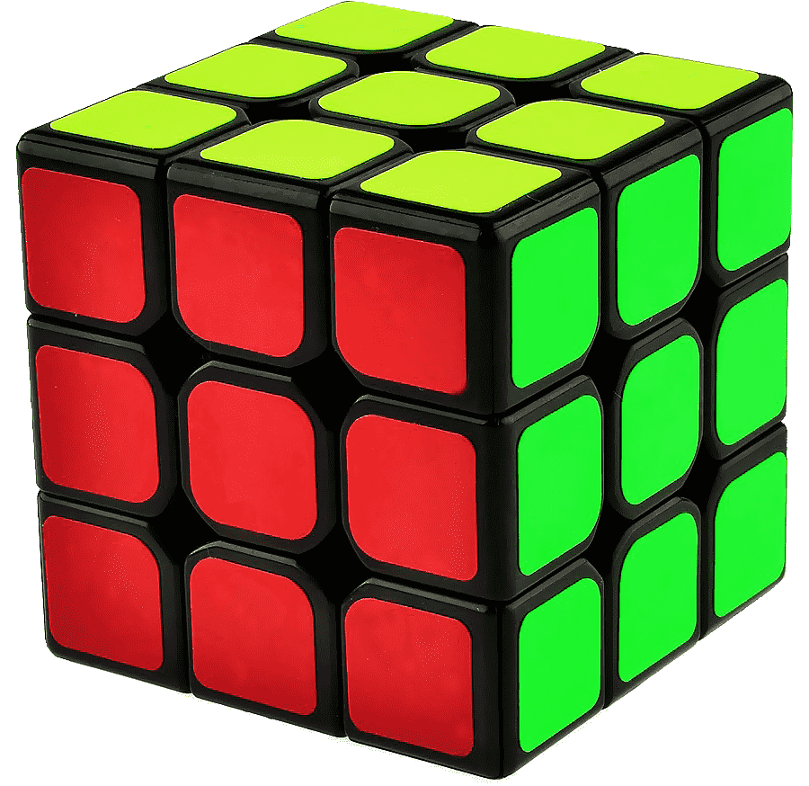

Kostka Rubika to kultowa układanka logiczna wynaleziona w 1974 roku przez węgierskiego architekta Ernő Rubika.
Składa się z sześciu kolorowych ścian, które można obracać w dowolnym kierunku, tworząc niezliczone kombinacje.
Choć rozwiązanie jej może wydawać się trudne, z odpowiednią metodą i praktyką każdy może ją ułożyć.
To nie tylko zabawka, ale też doskonały trening dla umysłu, rozwijający logiczne myślenie, cierpliwość i pamięć.
